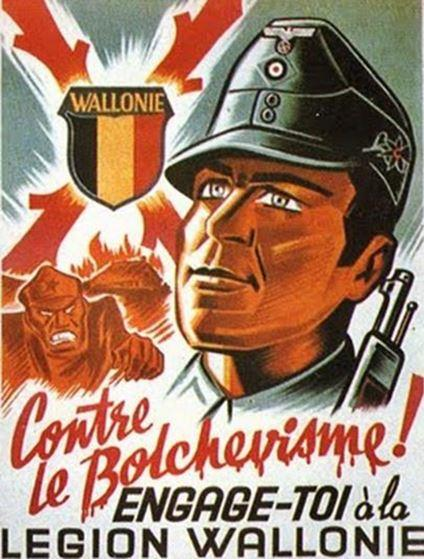
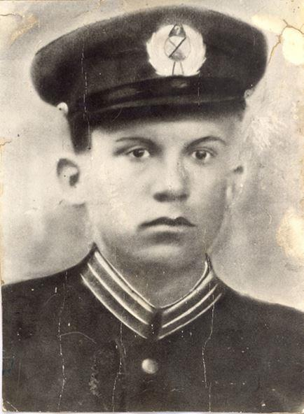
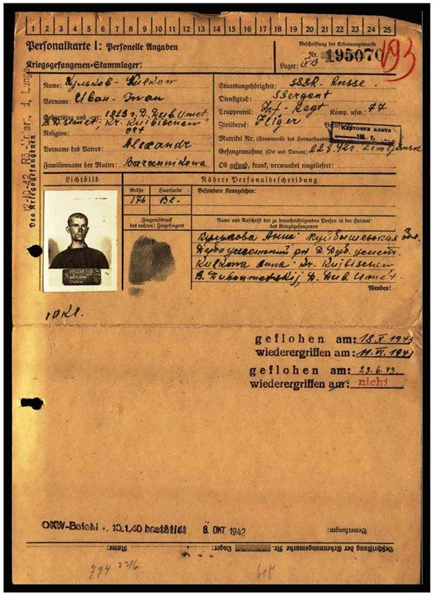
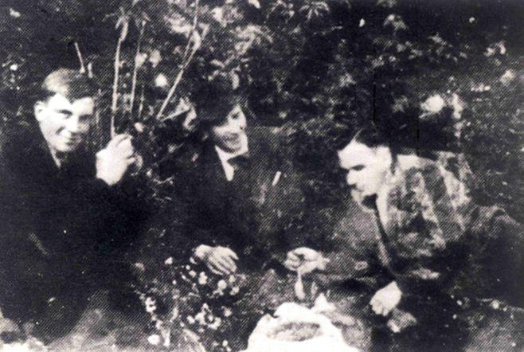
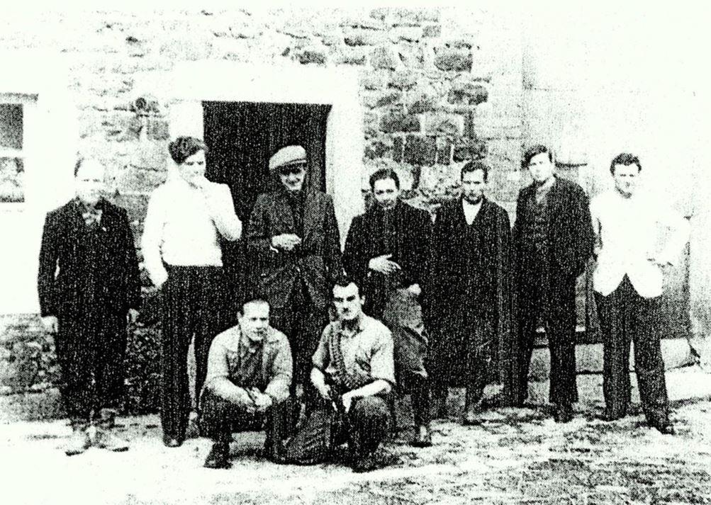
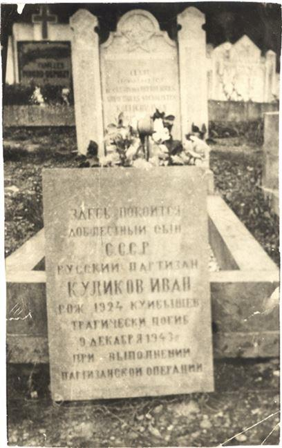
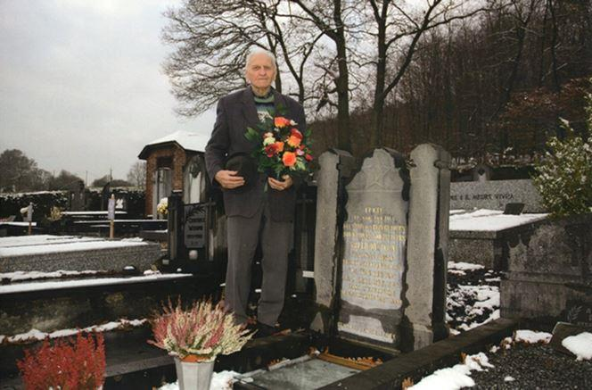
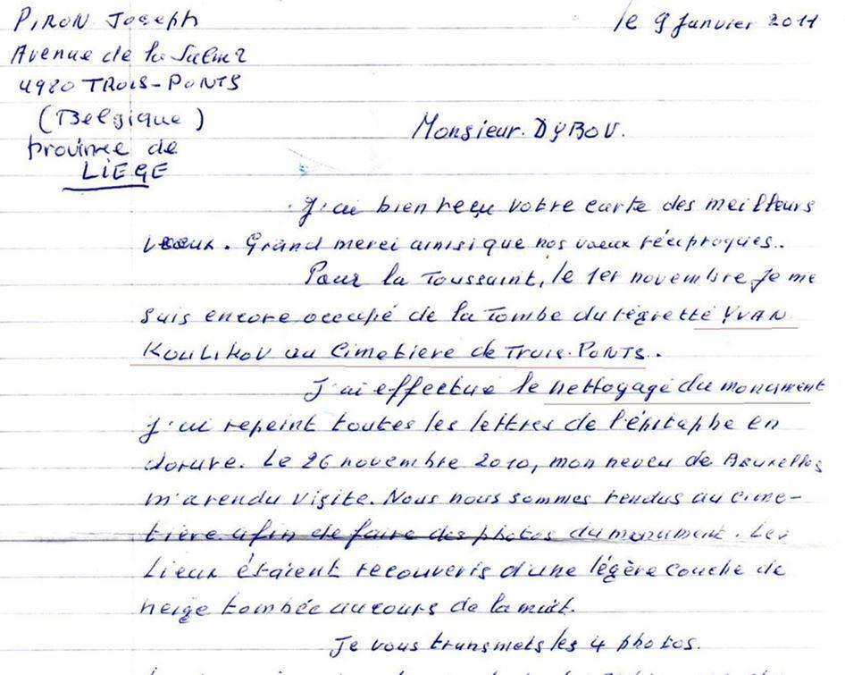
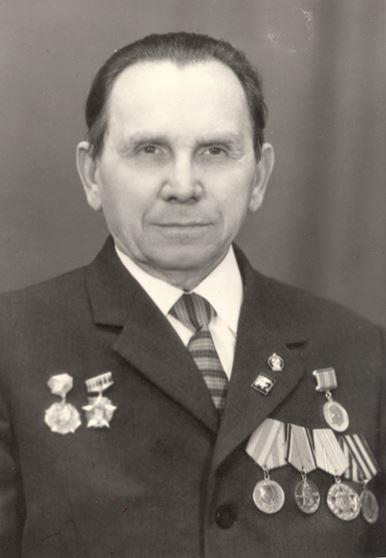
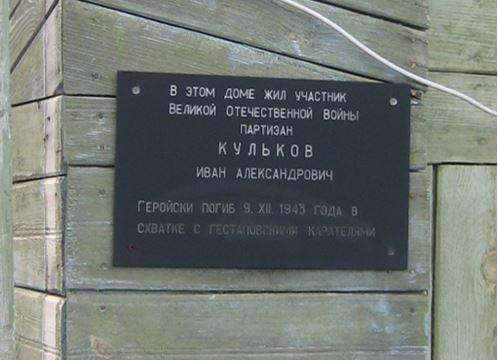

La Belgique a été attaquée par Wehrmacht le 10 mai 1940. Elle fait coalition avec la France et Grande-Bretagne mais celle-ci commence à s’effondrer dès les premiers jours.
Le Luxembourg capitule après une journée de guerre et les Pays-Bas après quatre jours. La Belgique capitule le 28 mai. La campagne de 1940 est appelée en Belgique "Campagne des 18 jours". Elle a couté la vie à environ 6500 militaires tandis que 150 000 ont été faits prisonniers.
L’occupation de la Belgique par les nazis était un peu différente de celle de la France. Avant tout parce que le gouvernement belge n’a pas accepté la décision de capitulation faite par le Roi Léopold III1. Il se créé alors un gouvernement en exil dirigé par Hubert Pierlot et Paul-Henri Spaak. Faits curieux, ils étaient les frères ainés de Claude Spaak d’un des dirigeants d’Orchestre Rouge et Charles Spaak l’auteur du scenario du célèbre film « Normandie-Niemen ».
Néanmoins une bonne partie de la population belge semble favorable à la présence allemande malgré l’annexion de l’Eupen-Malmedy2 et du Luxembourg. Les Allemands vont ainsi réussir à former deux divisions des volontaires qui vont participer à la guerre contre la Russie. Il faut par ailleurs compter la milice REX qui va notamment participer à la garde des prisonniers soviétiques en Belgique et dans les régions du nord de la France du nord administrativement rattachée par le pouvoir allemand à la Belgique. C’est dans ces régions qu’arrivent, à partir de la fin 1941, des prisonniers soviétiques pour travailler dans les mines, dans les usines métallurgiques et dans l’agriculture.
La Résistance s’est constituée, comme partout en Europe, principalement autour de communistes après l’attaque allemande contre l’URSS.
Les prisonniers soviétiques évadés furent, dans un premier temps, transférés vers le France non occupée et en Suisse. Plus tard, quand la Résistance est devenue plus solide et a commencé des actions en Belgique, des évadés l’ont rejointe et ont participé à ces actions. A l’instar de la création en France du Comité Centrale des Prisonniers Soviétiques, en Belgique une même structure est créée en Belgique où se forment quelques groupes soviétiques : la Brigade «Pour la Patrie!» sous le commandement du lieutenant-colonel Constantin Shoukshine dans la région de Limbourg, le « Bataillon russe » sous commandement de Boris Tyagounov près de Bruxelles, la « Brigade Russe » sous commandement du Serguei Sokolov, la « Campagne Russe » sous commandement du commandant Dotsenko dans la région de Liège. À travers ces différentes structures armées ce sont près d’un millier de soldats soviétiques évadés qui vont rejoindre la Résistance belge.
Parmi eux, près de 400 soldats soviétiques seront inhumés à jamais dans la terre belge. 11 monuments ont été en leur honneur érigé par l’USSR en Belgique. Mais bon nombre de ces soldats demeurent enterrés anonymement dans les campagnes.
 Ivan Koulkov élève d’école d'aviation en 1941L’un de ces héros et de sa sépulture fera l’objet d’une recherche particulière, en 2009, quand une famille russe a demandé de retrouver la tombe de son proche mort en Belgique. : Ivan Koulkov mort à 20 ans.
Il avait terminé ses études secondaires juste avant la guerre et était entré à l’école d’aviation civile… En mars 1942 il fut mobilisé et envoyé à Stalingrad, où il fut porté disparu. Même sa famille même ignorait s’il avait été mobilisé dans l’aviation ou dans l’infanterie. Dans la tourmente de l’année 1942 ont ainsi disparu des milliers jeunes hommes dont une seule formule résume leur vie : « Mort pour la Patrie ».
Mais Dieu a protégé Ivan lors de la terrible bataille de Stalingrad. Son régiment, le 77ème régiment d’infanterie, a battu en retraite et le sergent Koulikov est fait prisonnier le 22 août 1942 près de Tsimliansk, à mi-chemin entre Rostov et Stalingrad. À cette époque le général De Gaulle propose d’envoyer dans cette région une division de la France Libre – un projet qui malheureusement n’aboutit pas...
 Ivan Koulkov élève d’école d'aviation en 1941Ivan avec centaines d’autres sont envoyés au Stalag 304 près de Dresde et puis en octobre 1942 dans les mines de Winterslag en Belgique près de la ville de Hasselt. Sur sa carte de prisonnier est enregistrée une arrestation de 3 jours pour deux tentatives d’évasion en l’été 1943. Mais la troisième tentative, en octobre 1943, sera un succès.
Avec son camarade Dimitri Dremliuk ils parviennent, grâce à l’aide de Résistants belges, à s’évader et à se déplacer jusqu’à Liège. Ils rejoignent ensuite à pied Tilff où ils réussissent à monter dans un train. Malheureusement ils sont repérés par une patrouille allemande et doivent sauter de train en marche, comme en témoignera le conducteur du train Joseph Piron, qui aura juste le temps de leur indiquer où il habite.
Durant la nuit, ils parviennent à arriver chez lui au village de Coo où ils sont hébergés par Joseph Piron et son voisin. Son beau-fils et son fils ainé étaient déjà dans les maquis.
Ivan et Dimitri sont accompagnés jusqu’au 4ème régiment des Partisans Armés Ourthe-Amblève sous commandement du commandant Georges (Jean Collard), où, dans ce groupe, sont déjà présents quelques fugitifs soviétiques.

Ivan Kulkov, Joseph Piron (père) et Dimitri Dremliuk
Dans cette région fonctionnait déjà plusieurs groupes de partisans soviétiques. L’activité principale des partisans étaient des actions sur les lignes de chemins de fer. Liège étant un grand centre industriel, chaque destruction des chemins de fer permettait de couper, et au moins de retarder, les livraisons militaires pour la Wehrmacht.

Groupe des partisans soviétiques autour de Jean Collard (avec la casquette). Deuxième de droite probablement Ivan Koulkov
 La tombe d’Ivan avec plaque en russe dans les années 50. (il y a une erreur – né en 1923, mort en 1944)Malheureusement Jean Collard fut tué dans le combat le même jour que le commandant Evgueni Dotsenko qui venait de prendre le commandement des partisans soviétiques.
Un groupe d’évadé soviétiques s’illustrera sous commandement du lieutenant-colonel Shoukshine ancien commandant d’un régiment des chars. Celui-ci avait été fait prisonnier au début de la guerre et avait travaillé dans la même mine que Ivan Koulkov.
Son groupe va considérablement se renforcer passant de 40 personnes, au printemps 1944, à l’effectif de 435 combattants, en décembre de la même année. Il va ainsi s’illustrer et obtenir un palmarès très honorable :
- 894 soldats ennemis tués
- 24 camions, 6 trains et 4 ponts détruits.
Parmi les illustres combattants de ce groupe, 21 soldats soviétiques vont mourir en Belgique.
Le 9 décembre 1944 le groupe russo-belge comprenant Ivan Kulikov et Dimitri Dremliuk reçoit l’ordre d'exploser un pont près du village de Trois-Ponts. En quittant le lieu ils tombent sur les gendarmes allemands. Durant le combat une grenade tombe près du fils de Joseph Piron. Ivan réussit à le pousser mais lui-même est gravement blessé. Les partisans s’empressent de trouver un docteur dans le village qui tente de faire une opération. Mais Ivan n’y survivra pas et il est enterré par les partisans dans ce village.
Après la guerre, les Habitants du village ont érigé un monument avec une étoile et une plaque en russe sur sa tombe. C’est Joseph Piron fils qui veillera sur cette tombe en mémoire de ce héros russe qui avait sauvé la vie de son frère.

Ivan Kulkov, Joseph Piron (père) et Dimitri Dremliuk

Lettre de Joseph Piron à l’auteur

Dimitri Dremliuk en 1976
Les citoyens soviétiques ont indéniablement participé à la libération de Belgique. Parmi les survivants, la plupart sont transférés en France avant d’être acheminés vers l’URSS. Ivan Dremliuk rentrera en URSS, le 8 mai 1945, avec le groupe de Constantin Shoukshine, par le port d’Odessa.

La plaque commémorative sur la maison natale d’Ivan Koulkov
S.B.
NOTES ET RÉFÉRENCES
1. Arrière-petit-fils du premier Roi belge Léopold I qui fut général d’armée russe.
2. Eupen-Malmedy est une petite région à prédominance germanophone de l'est de la Belgique . Il se compose de trois cantons administratifs autour des petites villes d' Eupen , Malmedy et Sankt Vith qui couvrent quelque 730 kilomètres carrés (280 miles carrés). Dans la région elle-même, la région est appelée Belgique orientale (en allemand : Ostbelgien ). Ailleurs en Belgique, la région est communément appelée Cantons de l' Est ( Français : Cantons de l'Est , Pays - Bas :Oostkantons ).
Partager cette page